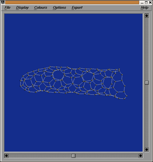
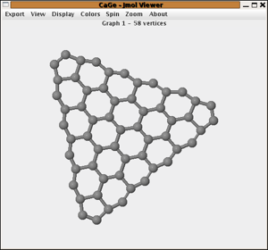

Tubes and cones
The nanotube cap window
Nanotubes are a special kind of fullerenes. Though topologically spherical, the geometric form is a very long tube consisting only of hexagons and capped on both sides with "patches" containing 6 pentagons each and a varying number of hexagons. Because the tube body is very long compared to the cap, nanotubes are often considered to be caps with a one-side infinite tube body - or mathematically speaking: cubic plane graphs with 6 pentagons and all the rest hexagons. In this window these one-side infinite nanotubes are considered. Realizing the graphs geometrically, the 6 pentagons bend the surface so that the hexagons form a tube with constant diameter. The boundary between the tube body and the caps can be chosen in a way that cutting along this boundary the caps become hydrocarbons in the sense of the hydrocarbon windows with a boundary sequence of the form (23)l(32)m. These parameters l,m are characteristic for the nanotube and we require a cap to have a boundary of this form with a pentagon adjacent to it.
In this window you can give the parameters l,m. Then all caps for these parameters are generated that would lead to non-isomorphic one-side infinite nanotubes. Note that caps that are non-isomorphic as hydrocarbons can still lead to isomorphic nanotubes if they are attached to a one-side infinite tube.
The generation can be restricted to IPR-structures and a number of rings representing the beginning tube can be attached to the cap .
Some more links can be found here.

The nanocones window
In case of an infinite 3-regular graph with 1 ≤ p ≤ 5 pentagons (and the rest hexagons) the pentagons bend the structure not enough to form a tube -- the structure becomes a cone.
Similar to nanotubes also nanocones can be classified by a certain boundary structure. If 1 ≤ p ≤ 5 is the number of pentagons and we set s= 6-p then for p ∈ {1,5} one can always find a closed cycle neighbouring a pentagon so that the inner part has a boundary structure of ((23)k2)s for some k. We call this a symmetric boundary. For p ∈ {2,3,4} the boundary structure is either symmetric or of the form ((23)k2)s-1(23)k-12 which we call almost symmetric.
In this part one first chooses whether one wants a symmetric or an unsymmetric (almost symmetric) boundary. Then one chooses the number p of pentagons in the cone and the length of the longest side -- which is the parameter k in the description of the boundary above.
The generator generates all non-isomorphic caps with the given boundary structure. Different from nanotubes, different caps can not lead to the same cone, so there is a one-one correspondence between these caps and nanocones with caps for these parameters.
Options are:
- generate only caps representing IPR nanocones
- add a given number of hexagon rings to the generated caps

| choosing
a generator window |
||
| the
hydrocarbons windows |
||